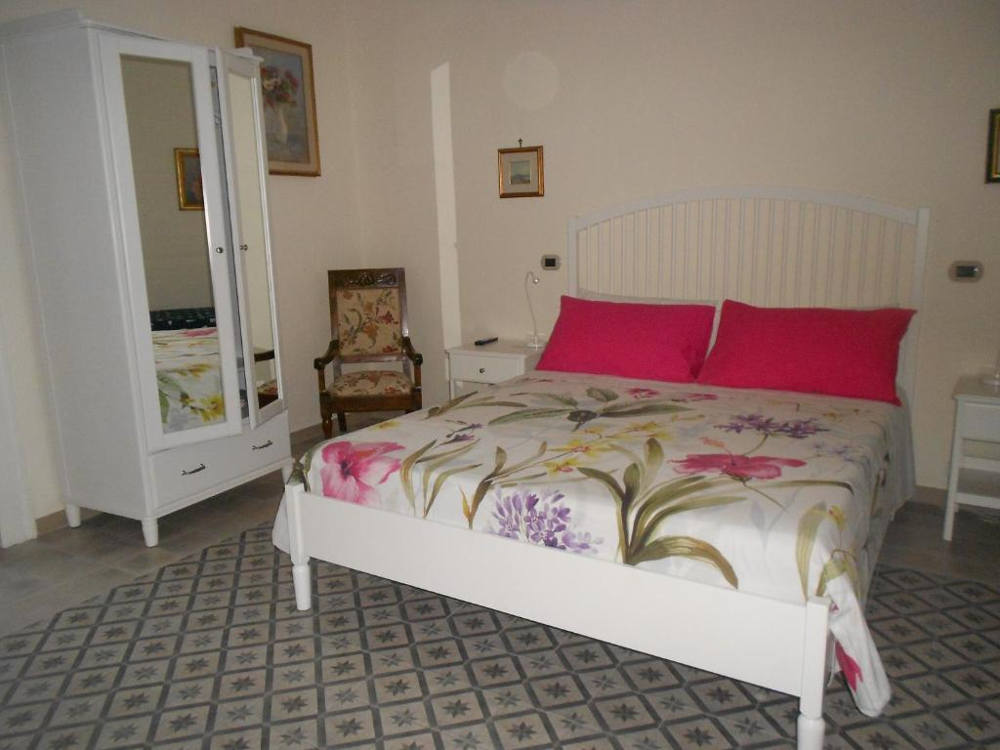
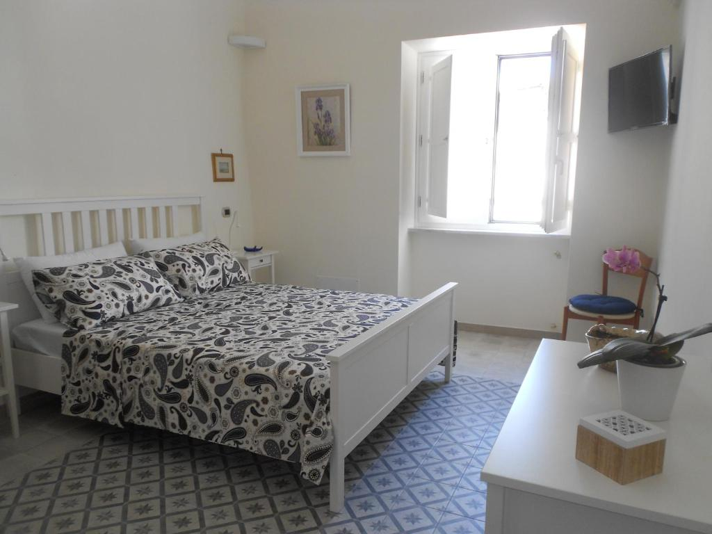

La camera ampia.
Bagno privato · aria condizionata · Wi-Fi
Foto pubblicata nell’annuncio di Booking.com · tipologia e uso definitivo da confermare con la struttura.
Riposo, con i comfort essenziali
Ogni camera del B&B Stella dispone di bagno privato, aria condizionata e Wi-Fi. Le foto pubbliche aiutano a mostrare gli ambienti reali; immagini, nomi e assegnazione delle camere andranno confermati con la struttura.

Bagno privato · aria condizionata · Wi-Fi

Bagno privato · aria condizionata · Wi-Fi
Il contesto
Il B&B descrive una struttura del XVI secolo recentemente ristrutturata a Vico Equense. Una galleria completa fornita direttamente dalla struttura renderebbe questa pagina ancora più convincente e personale.
Consulta il sito del B&B ↗